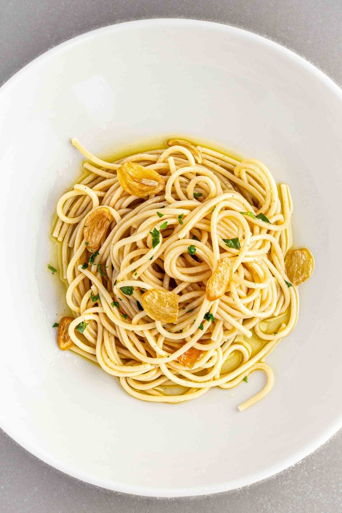
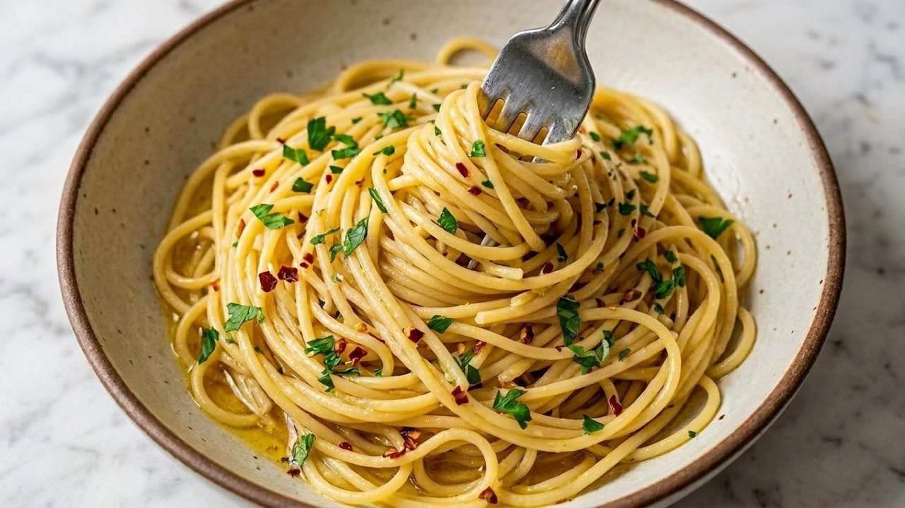
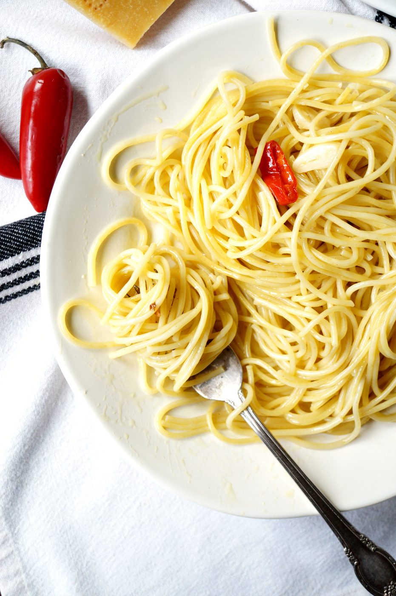
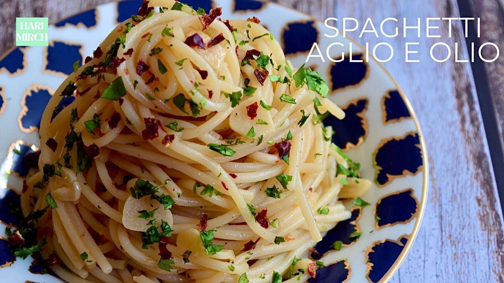
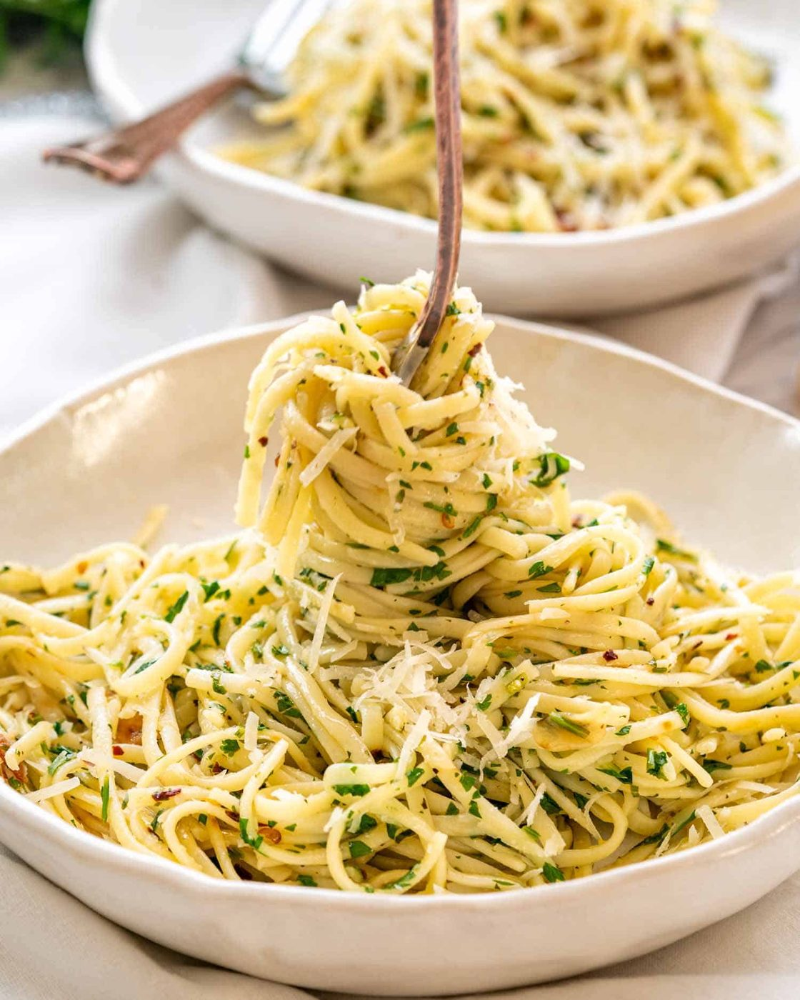
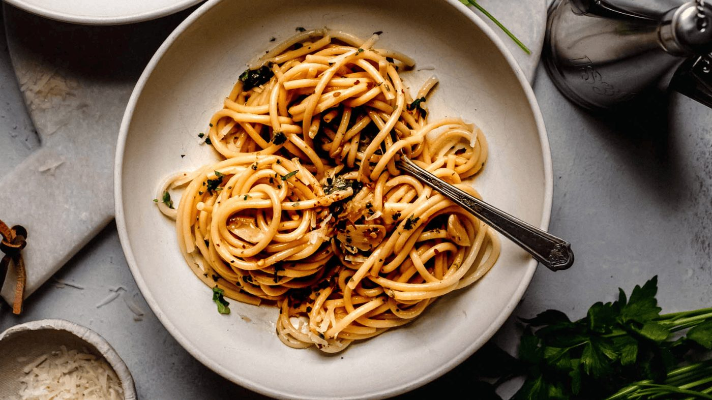
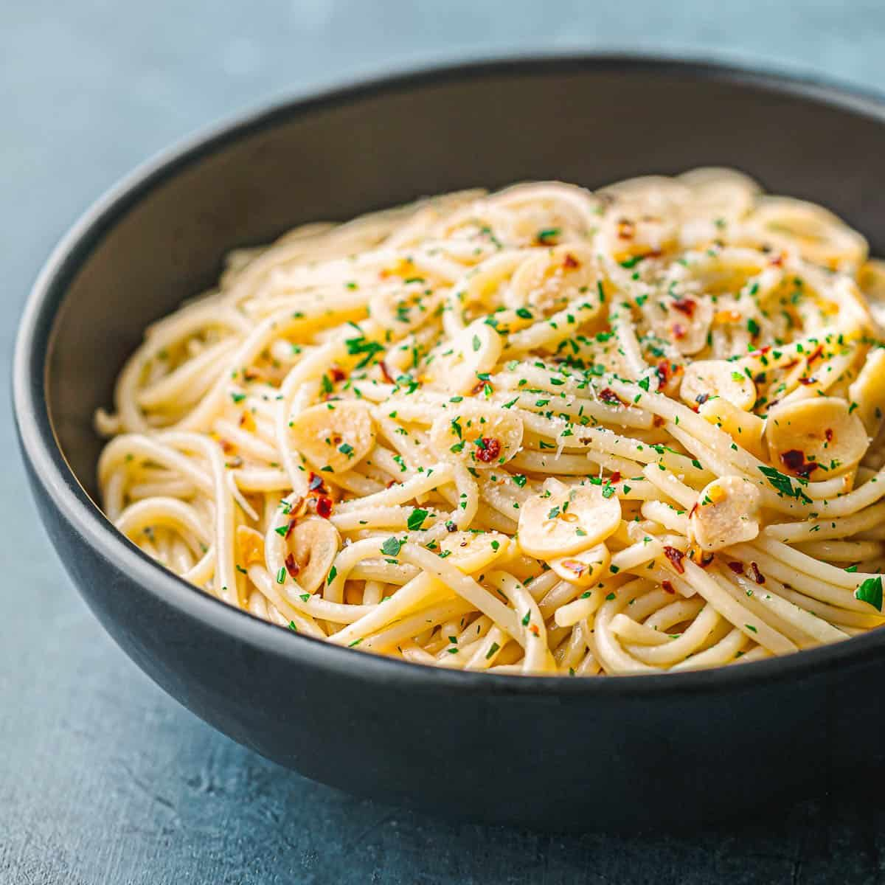

← Italian Classics
Spaghetti Aglio e Olio
Garlic, oil, chili, parsley — the midnight pasta of Naples, and proof that pantry cooking can be poetry.
Garlic, oil, chili, parsley — the midnight pasta of Naples, and proof that pantry cooking can be poetry.
Aglio e olio is the dish Italian cooks make for themselves after service, the one they feed you at 2 a.m., the one that costs almost nothing and asks for nothing but attention. Sliced garlic blooms slowly in olive oil — never browned to bitterness, just turned golden and sweet — then collides with pasta water and starch to make a sauce out of almost nothing.
That emulsion is the entire trick. People dismiss this as plain noodles with oil, and then they wonder why theirs is greasy and separated while the version at a Roman trattoria clings silky to every strand. The difference is starch: a well-salted pot, a cup of cloudy pasta water, and enough tossing off the heat for oil and water to stop being enemies.
serves 4 — tick items off as you shop; it saves as you go
A big pot, a fistful of salt. Cook the spaghetti one minute short of the package time. Before draining, scoop out two cups of that cloudy water — it is your sauce.
Meanwhile, warm the oil with garlic and chili over medium-low. The garlic should barely sizzle. Ten minutes to pale gold, never brown. Pull it off the heat the instant it looks right; residual heat keeps cooking it.
Drain the pasta. Add it to the pan OFF the heat with a big splash of pasta water and the parsley. Toss hard and constantly for a minute — the starch and oil will turn glossy and cling instead of pooling at the bottom of the bowl.
Too dry? More pasta water. Taste and salt. Cheese is a polarizing addition — the Naples orthodoxy says no, your kitchen says whatever makes you happy. Serve from the pan, immediately.







Images are web-sourced via image search and self-hosted. Original sources:
https://z-cdn.chatglm.cn/image-search-mcp/images-ppt/1c3e2eeeede1.jpghttps://z-cdn.chatglm.cn/image-search-mcp/images-ppt/223aefdadf70.jpghttps://z-cdn.chatglm.cn/image-search-mcp/images-ppt/3bdef0d42003.jpghttps://z-cdn.chatglm.cn/image-search-mcp/images-ppt/46651f233925.jpghttps://z-cdn.chatglm.cn/image-search-mcp/images-ppt/59fff3b9000b.pnghttps://z-cdn.chatglm.cn/image-search-mcp/images-ppt/8efdaafb10ac.jpghttps://z-cdn.chatglm.cn/image-search-mcp/images-ppt/dc83a662fbb0.jpgVerified working videos — click a card to load the embed.


Powered by GitHub Issues — the backup kitchen. One issue per recipe; your comment lands in the repo.